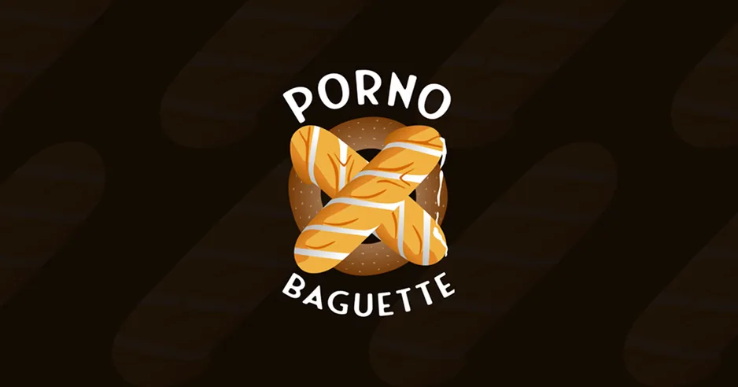

On dit merci qui ?
Jacquie & Michel
J&M est une marque française de contenu pour adultes fondée en 1999, devenue l’un des sites X les plus populaires du pays grâce à son positionnement « amateur » et une stratégie marketing très visible, au point de s’imposer bien au-delà de son public initial dans la culture populaire française.
Skills
- UI/UX
- Intégration
- Graphisme


Douze ans dans la maison
Je suis arrivé au tout début de l’équipe, et j’ai grandi avec la marque — assez tôt pour l’aider à prendre sa place dans le paysage français, assez longtemps pour reprendre une à une toutes les surfaces sur lesquelles elle se montre.


L’état des lieux était sans ambiguïté : un design vieilli et aucune
optimisation.
Il n’y avait pas d’ajustement à faire, il fallait tout reprendre depuis le
début, pour que les guidelines et les bonnes pratiques s’appliquent enfin
partout.





Les campagnes marketing
Jacquie & Michel a toujours été connu pour ses campagnes marketing innovantes et impactantes. Le meilleur exemple : le fameux « On dit merci qui ? » est devenu une expression courante dans la culture populaire française.